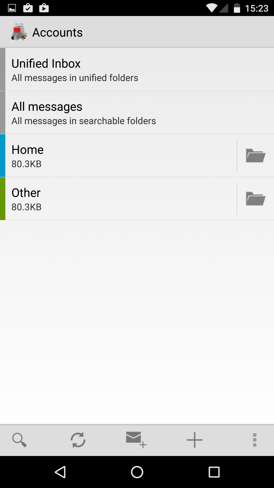

View Accounts
The Accounts screen shows you a list of all the accounts you have configured in K-9, along with a number of special folders.

Unified Inbox
The top entry is the unified inbox. Tapping on this will show you a combined list of the emails in all your accounts' inboxes.
All Messages
This entry provides a list of all messages in displayed folders.
Regular Accounts
Each account is then shown.
- Tapping the account name, icon shows the inbox with all messages available
- Tapping the colored circle / unread message count shows the inbox with only unread messages visible
- Tapping the folder icon shows the full list of folders
Options
Long-pressing on an account provides a list of options:
- Move up - This moves the account up in the account list
- Move down - This moves the account down in the account list
- Empty Trash - This empties the accounts' Trash folder
- Account settings - This provides a link to the accounts settings page
- Remove account - This deletes the account
- Clear messages - This deletes all the local messages
- Recreate data - This removes all the local emails, attachments and other data, but not the settings, meaning it is recreated from the information on the server.
- Clear pending actions - This removes any pending actions - e.g. sending email, synchronizing read states, moving emails between folders, etc.
- Export account settings - This exports the settings for debugging & import into another copy of K-9.
Note that the 'Remove account', 'Clear messages', 'Recreate data' and 'Clear pending actions' can cause you to lose emails if they are only store on the device (common for POP e-mail).
'Clear pending actions' can make the device out of sync with the server which could cause later confusion. Occasionally 'Clear pending actions' is useful for handling certain bugs with the application - but the developers would appreciate feedback (logs / steps to reproduce) in the case that this is necessary.